在Prada遇到“镜中我”：亲密关系从来不是找一个完美的人
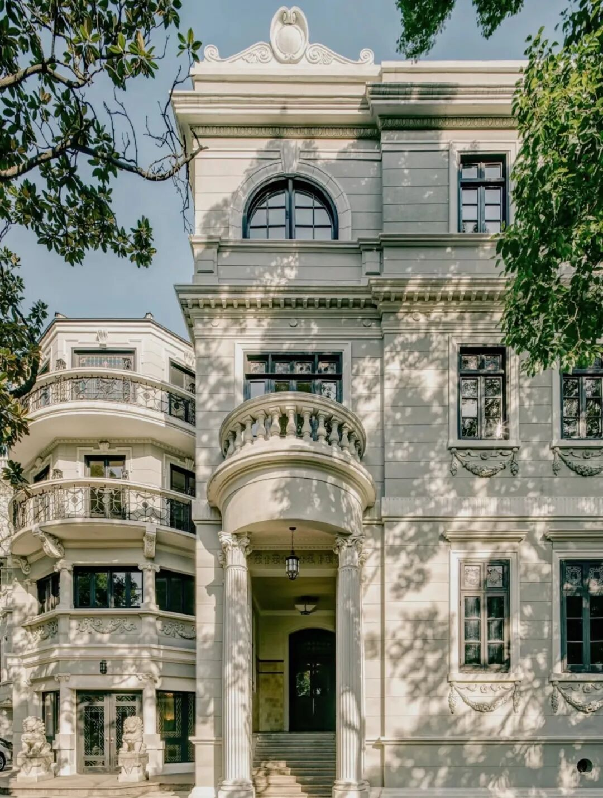
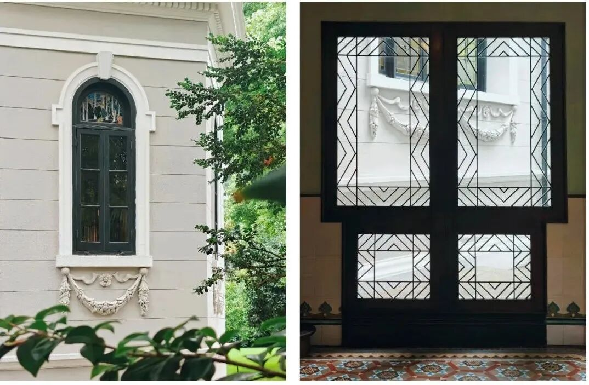
很久没有参加社交活动了，这周决定出门透透气，去看Prada的展。
1918年的老宅邸真的很美，繁复的装饰无处不在，天花板的石膏装饰、楼梯扶手的木质镶板、彩色玻璃的几何图案，意大利的专家修旧如旧，令建筑的每一处都透露出悠久的历史。
展览的主题是《镜面 Mirrroing》，由Lucio Fontana和Michelangelo Pistoletto 两位意大利艺术界的巨匠联合呈现。可以看得出，两人很努力地在思考和创新，利用镜面、三维性、自画像等手法来探讨"空间"，想在这座百年宅邸里创造一个新的维度。
当我得知，这些作品竟然来自于20世纪40年代 —— 战后的意大利时，不禁赞叹，真的是“先锋”！
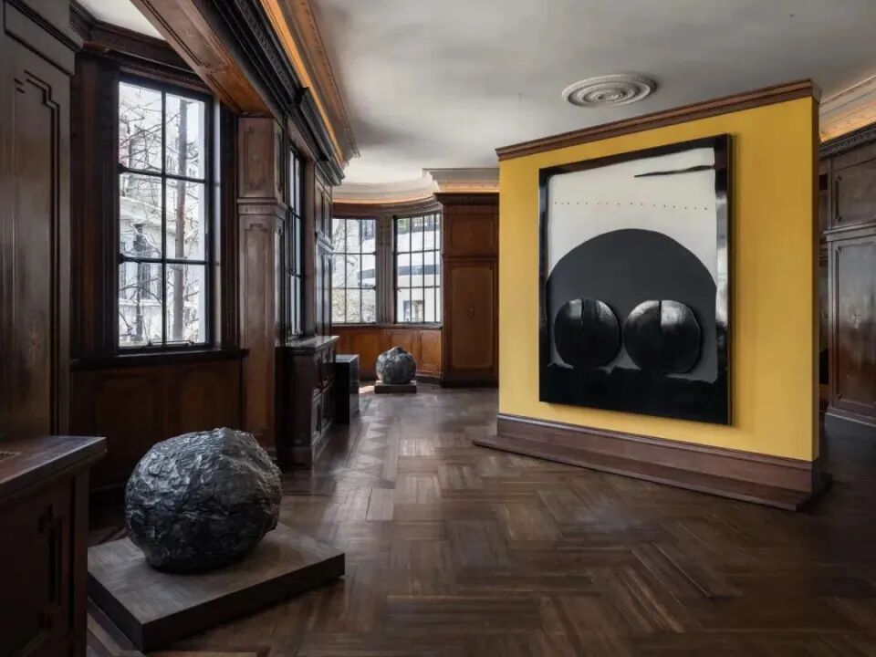
逛完展，我观察到一个奇妙现象：
99%的观众是女性，其中一半是20-30岁的年轻女性，另一半是50岁以上的中年女性。她们要么还没有踏入婚姻，要么已经从家庭的重担中解脱，反正她们拥有属于自己的闲暇时间。
果然，当我去到三楼的酒廊，这里早已被她们挤满。女郎们愉快地喝着香槟，围拢着交谈。组织这次观展的朋友也是单身美女，她又把我介绍给其他单身女郎。
不禁令我想到这几年另一奇妙现象，30岁之前结婚的朋友陷入离婚大潮，30岁还不结婚的似乎将此事抛之脑后，结了婚的朋友里三对有两对是丁克，单身女子都在咨询冻卵，唯一对婚姻充满热情的只有gay couple。
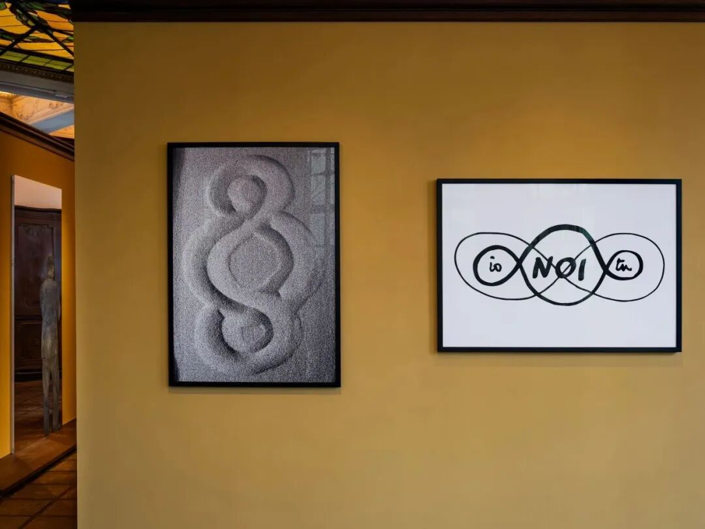
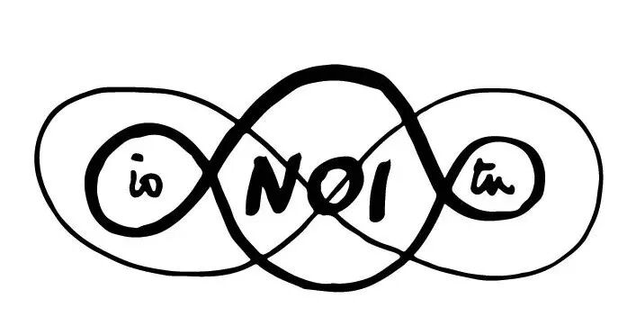
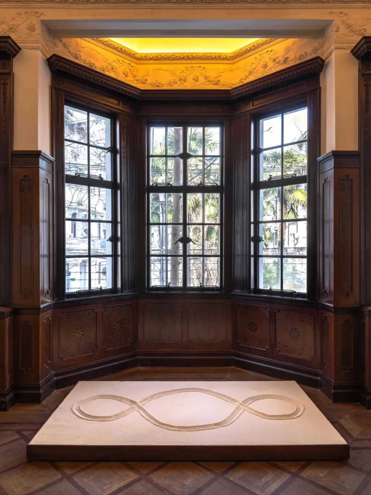
看着眼前热络非凡的酒会，我不禁思考：单身那么美好，那么结婚的目的究竟是什么？
有人说，结婚的目的是找到契合自己的那块拼图。但我想说，不论你嫁给谁，其实都是嫁给你自己，嫁给你当年的认知、你的缺口，嫁给你在当下那个时刻所需要的东西。到最后你会发现，那块拼图不是别人，恰恰是你自己。
还有人说人生最幸运的莫过于有一个相对称心的伴侣，其次是没有伴侣，最糟糕的是有一个不称心的伴侣。所以想结婚的女孩子，千万不要在前期吝啬花大量的时间，确认这是你想要的生活，否则后期会花大量的时间去应付你不想要的。
其实爱情也好，婚姻也罢，都不存在一劳永逸，更不存在通过某个人直接获得救赎。当你自身不够有力量时，大概率会从一个深渊，到另一个深渊。
不如靠自己，路虽苦，但是唯一可靠途径。
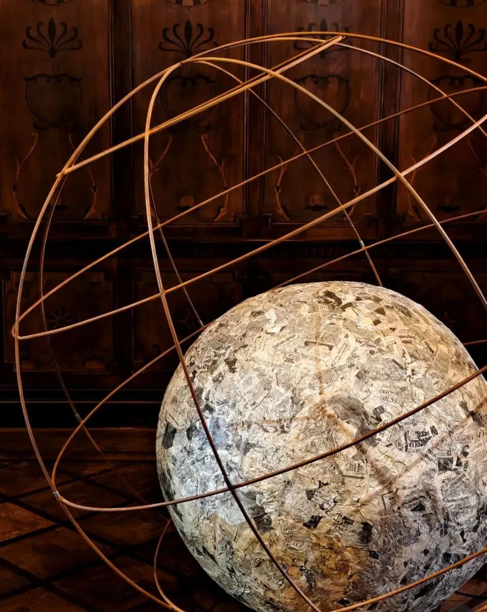
我独自喝着冰饮，看到门口有位美女姗姗来迟。她又有气质又长着一张天使脸蛋，简直是全场最佳。朋友立即迎接她，说要给她介绍男性认识。她却说上一次谈恋爱已经是两三年前了。
果然，美丽和被爱从来不是人生的解药。
作为一家头部媒体的编辑，她告诉我她最近在做一些独立女性的专访。我说你长得那么美，做这份工作肯定不容易，因为一般独立女性看到你都嫉妒得一句话都说不出来……
更何况，如今需要在大众媒体前标榜自己是“独立女性”的，背后都有一个或一群男性。至于那些真正的“独立女性”，当你看到她私底下面目全非的样子，相信我，你肯定不愿活得那么辛苦。
这个世界上大部分谜团，人人都很想知道答案，但不是所有事情都有答案，不是所有答案都是真相，不是所有真像观众都能接受。
所以啦，不如做一个“不独立女性”专题更有看头，我们笑作一团。
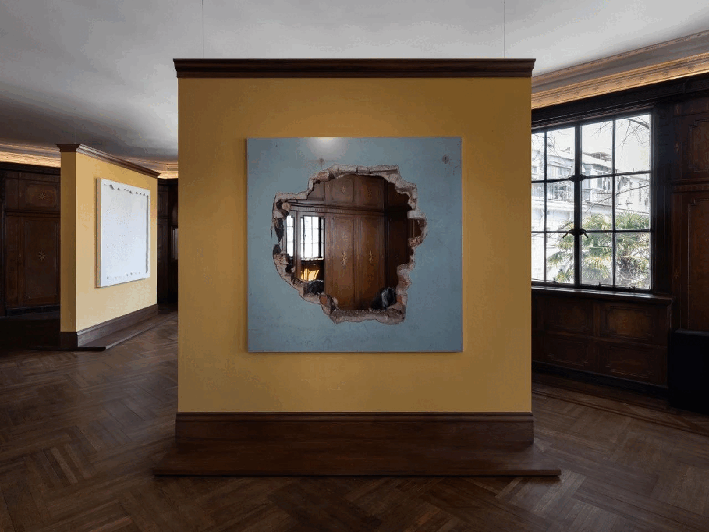
有时候我觉得现代化的城市，不论上海、米兰、纽约还是东京，都有一种冷漠的开明与自由，所有人的决定在巨大的都市里都显得微不足道，人人都告诉你，今朝有酒今朝醉，不要勉强，要纵情。那么请问，如今谈恋爱的好处还剩下什么？
最近《再见爱人》里的复旦教授沈亦斐很火，小红书上经常被推到她的切片。根据她社会学的理论，谈恋爱的好处是让人成长：亲密关系为我们每个人建立了一个“镜中我”的机会。通过爱人的眼睛，你看到那个“真实的自己”，包含你过去没有解决的伤痛，包含你不喜欢自己的一面，但它却是你最真实的组成部分。于是，你从一个简单快乐的小孩子，变成了一个愿意承担责任的，承认自己有优点也有缺点的成熟的大人。
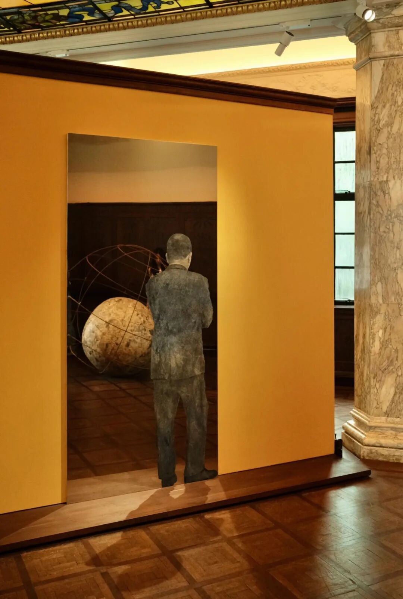
朋友建议美女使用社交APP，但她说划过一晚上每个都不堪入目，一气之下卸载了。
我说，根据研报数据，用户要左划100次以上才可能找到1个勉强能看得上的右滑，但即使聊天了，持续转化率大概率低于10%，which means 遇到candidate的概率是千分之一，你划一晚上才200-300，显然traffic还不够，用retail的说法，漏斗上端还没打开。
但我觉得社交软件对我们最大的危害可能是，当代人变得宁愿选择频繁分手，也无法再维持一段长久的关系了？
当下主流的爱情观是“没必要挽留任何人” —— 只要觉得无法给彼此带来幸福了，跟对方在一起并不快乐，就应该赶快去寻找彼此的快乐。因为人人都坚信，彼此都很快能再找到一个“在一起，你也快乐，我也快乐”的人。
其实，大部分情侣不是分开了，而是根本没有在一起过。
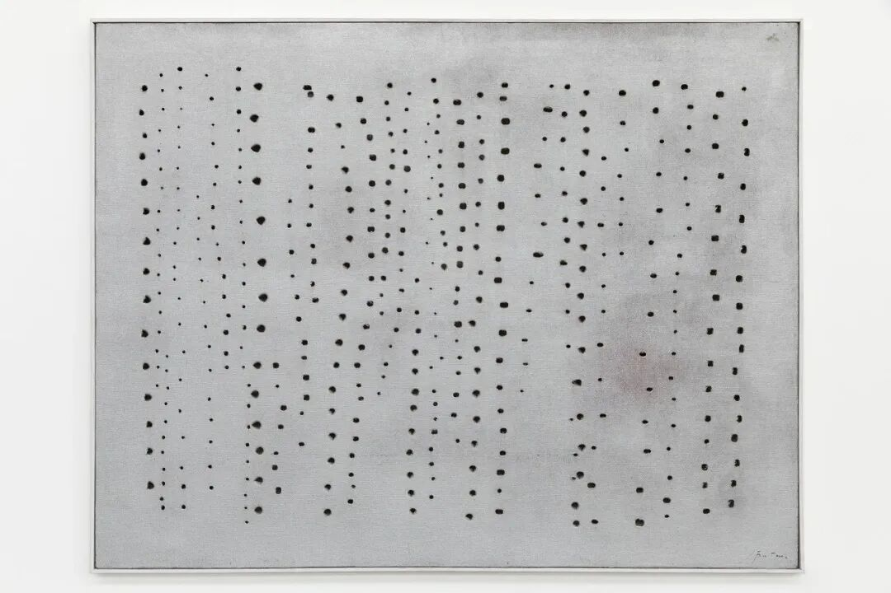
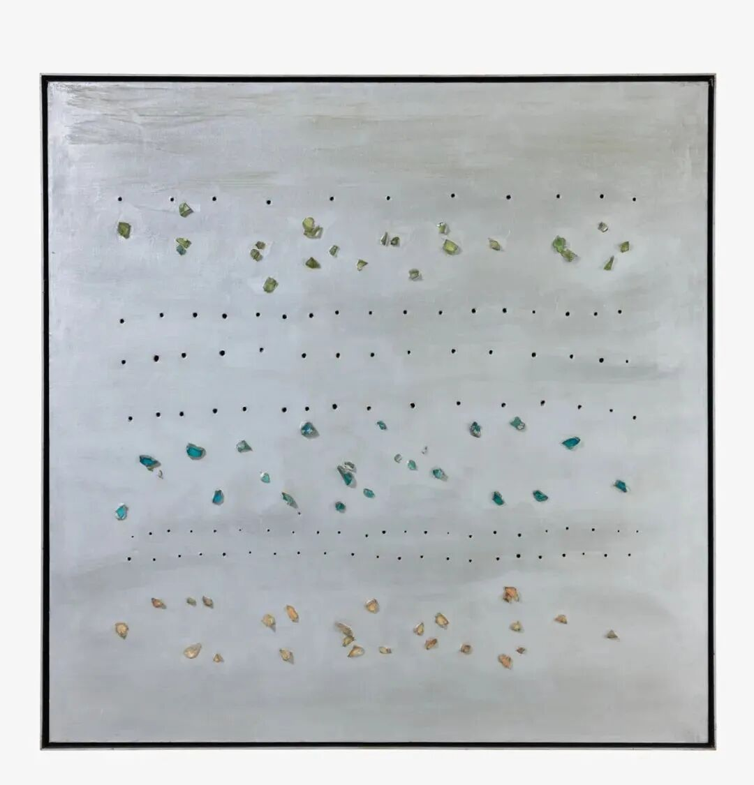
有个心理学概念叫做洋葱模型，两个人相爱的深度取决于彼此相处时，脱离社会面具的层数。很多情侣甚至夫妻，都只是表面亲密，能接受对方的外貌、社会身份、性格，但心与心之间，却隔着很远的距离，甚至无法向对方展示出真实。因为如今很多人谈恋爱，都是因为对方符合彼此的条条框框，加以权衡利弊后的筛选，短时间内就在一起了。这种卡在表皮层的关系是没有办法在沉默和沮丧时，触碰到彼此的真实情绪感受的。
真正的亲密，不是身体激素催生的快消品。身体熟悉，但灵魂还很陌生。所以彼此会被看似鸡毛蒜皮的琐碎的、现实的事情击垮，而你努力解决这些琐碎和现实的问题后，依旧无法挽回他的心。
只有当你们能够让彼此沉浸在深夜的对话中，自然袒露自己，成长路程中的创伤，原生家庭的阴影，当对方看见你奔溃难过的样子，却依然选择靠近，这种被看见被接纳的安全感，让彼此知道我们互相看到对方最无助敏感的一面后，我永远不会伤害你，你也永远不会伤害我，我们都会照顾好彼此。虽然没有人能具象化地定义爱是怎样的东西，但至少被看到过自己不堪又狼狈的样子后，依旧觉得能被温柔相待，甚至无可替代。你们的亲密会多出各种身份，除了恋人还是亲人，还是最好的朋友。
所以，不要着急坠入爱河，先问问自己，想要的是一个分享日常的搭子，还是亲密无间的爱人呢？
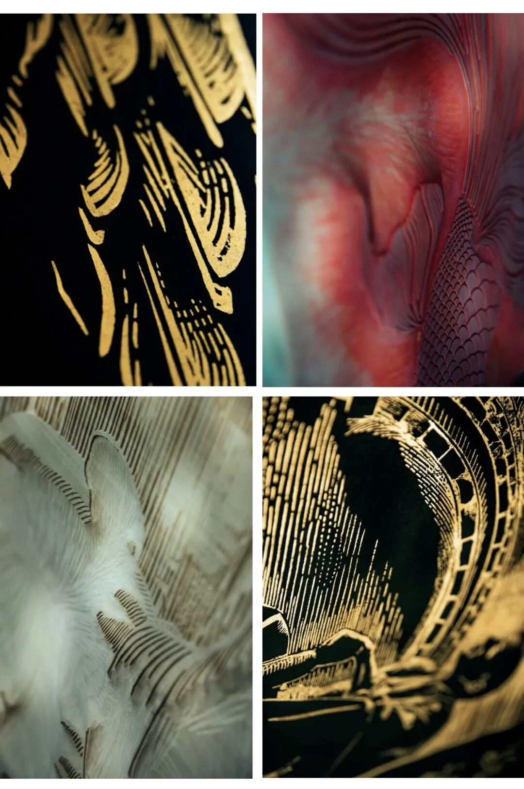
活动差不多结束了，一位男士正巧来告别，朋友热络地介绍他和美女认识，两位都是单身。看着这对陌生男女开始自我介绍，我也准备回去了，祝他们好运。
其实，也许无论嫁给谁、娶了谁，到了某个时候，人都会开始怀疑自己的选择。只是有件事大多数人都不会说出口：你不是因为选错了人而感到不快乐，而是因为这个世界上，没有一个人是完美的。
有钱的男人，可能没有时间；有时间的男人，可能没有钱。浪漫的，可能让你觉得不可信；忠诚的，可能又有点太过无聊。有魅力的，可能对谁都一样有魅力；太诚实的，你又会希望他多点惊喜和情趣。不管你选谁，都会有取舍。这不是悲观主义，而是现实。
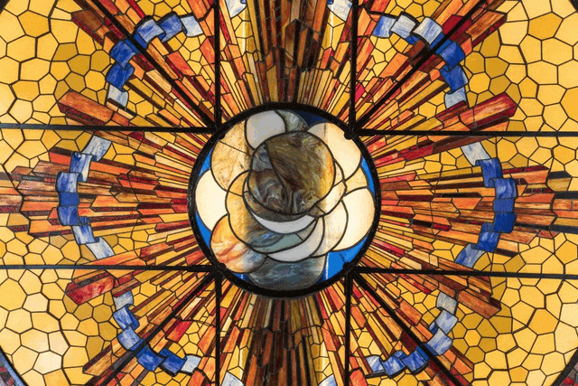
亲密关系从来不是找一个完美的人，而是两个人愿意在混乱、困惑、平淡或艰难的时候，依旧选择留下来耐心修复这段关系。
爱情不是靠砰然心动才能维持下去的，它靠的是一个又一个的选择——日常的选择：当你伴侣需要喘口气时你去洗碗，你累了也去买菜，在你烦躁时一如既往地愿意包容，在你想发火时愿意温柔，在想逃开时仍然选择靠近，是当你不知道说什么时，依然愿意陪着他沉默，是你愿意给空间，却不觉得被冷落。
就像这座百年宅邸中最美的部分 —— 彩绘玻璃窗上的复古和抽象几何图形，Prada找来顶级奢侈品建筑师Roberto Baciocchi，启用了意大利传统的脱蜡工艺，花了几年才得以修复，使他如今在整座荣宅中随处可见。
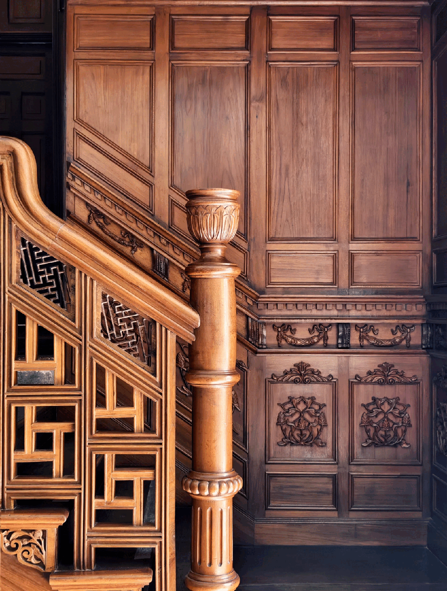
如果你在等一个“感觉完美”的关系
你可能会等一辈子
但如果你愿意亲手去打造
一段真实、有瑕疵但坚定的关系
你就可能收获一种真正能长久的爱
亲密关系从来不是努力找到对的人
而是一次又一次
努力成为彼此对的那个人
…
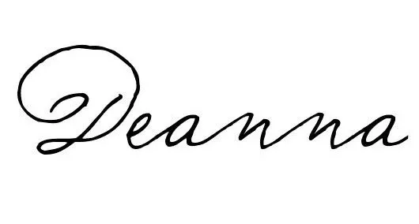
2025.06.15
——
END